Services
Library Cataloguing & DDC Classification
Cataloguing and metadata clean-up for school and campus libraries: subject headings, DDC call numbers, deduplication, and SLiMS-ready data.
Excel / Sheets Data Cleaning
Deduplication, format standardisation, fixing inconsistent names, dates and categories — delivered clean, with a QC report of what changed.
Recaps, Pivots & Dashboards
Raw tables turned into clear recaps, pivot summaries and simple dashboards your team can actually read and reuse.
Web Research & B2B Lead Lists
Structured lead lists built only from public data. Every row carries its source URL so you can verify each record yourself.
Selected Work
Case 1 — Library Catalog Consolidation
Several library catalog exports merged into one clean master catalogue. Duplicate pairs were detected and resolved, and every record was completed with subject headings and DDC classification.
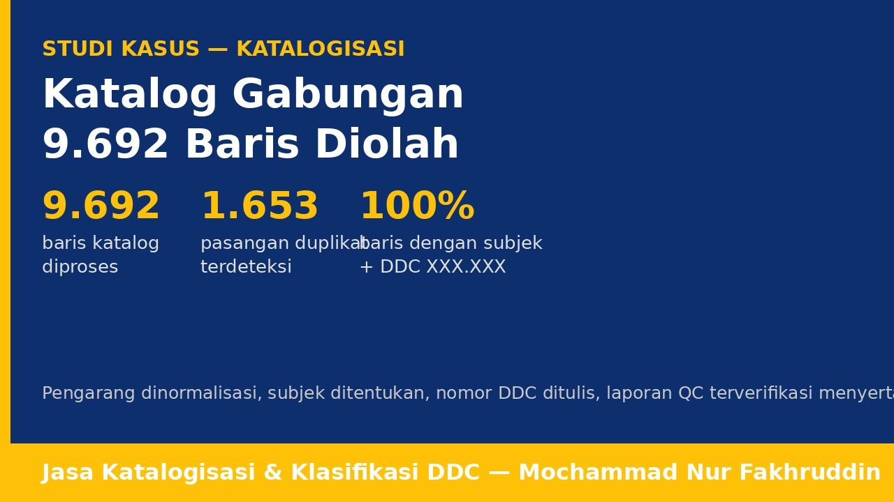
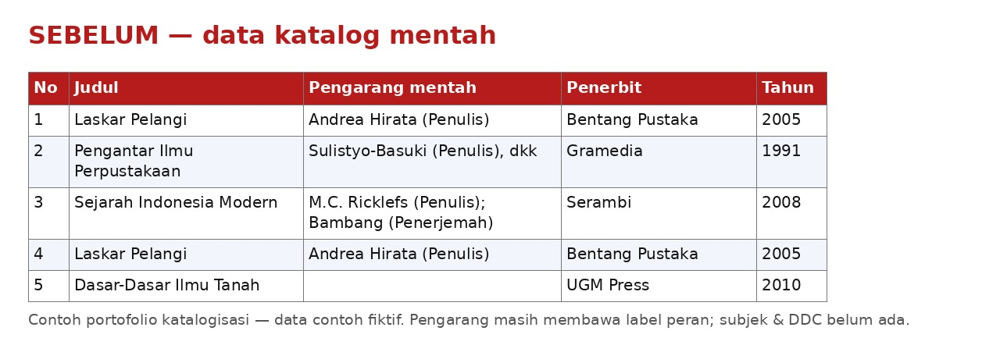
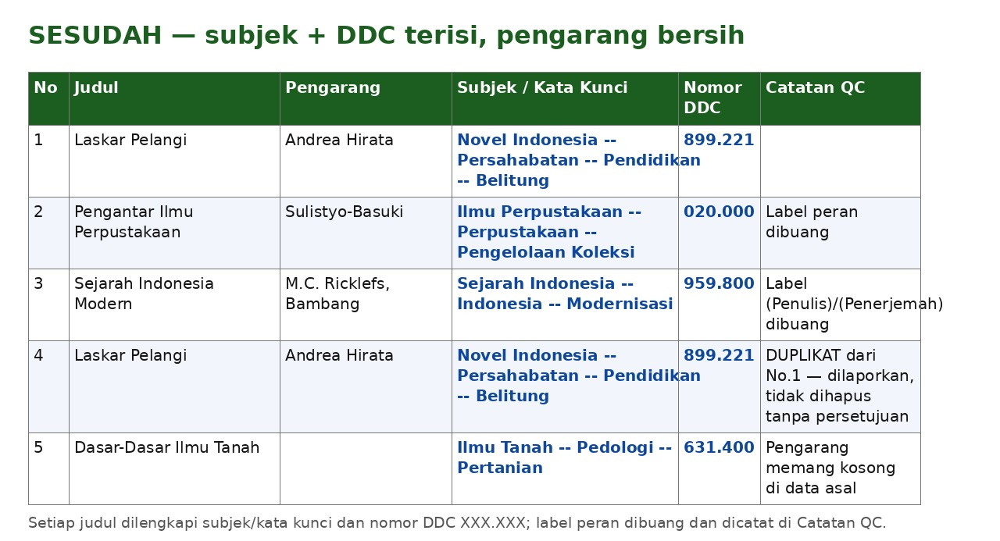
Case 2 — Excel Data Cleaning, Before / After
Example of a typical cleaning job on a demonstration dataset: inconsistent spellings, mixed date formats and duplicate rows standardised into one clean table. The dataset is fictional and shown to demonstrate method and output format.
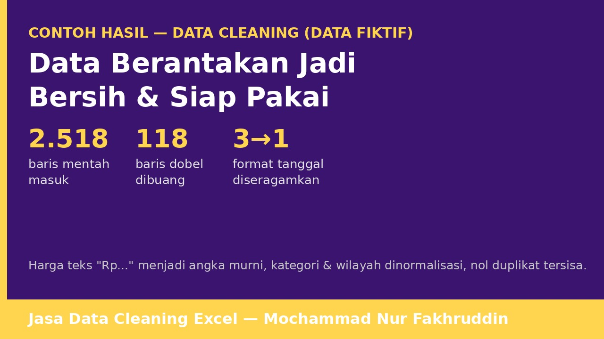
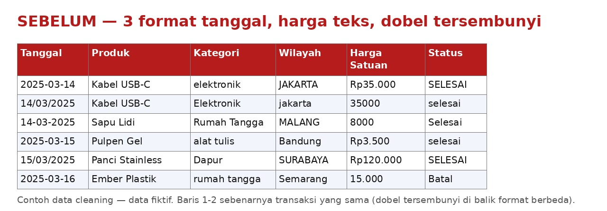
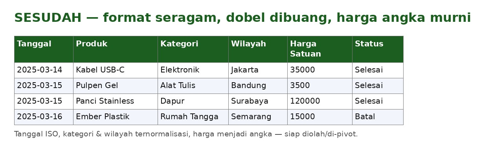
Case 3 — Recap, Pivot Table & Dashboard
Example recap workflow on a demonstration dataset: a cleaned table summarised with pivot tables and presented as a simple dashboard. The dataset is fictional and shown to demonstrate method and output format.
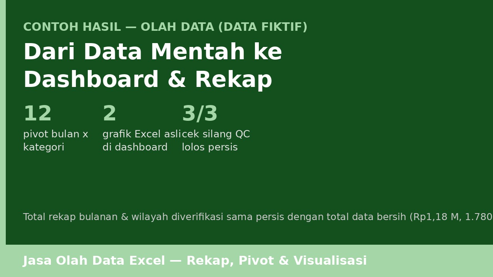
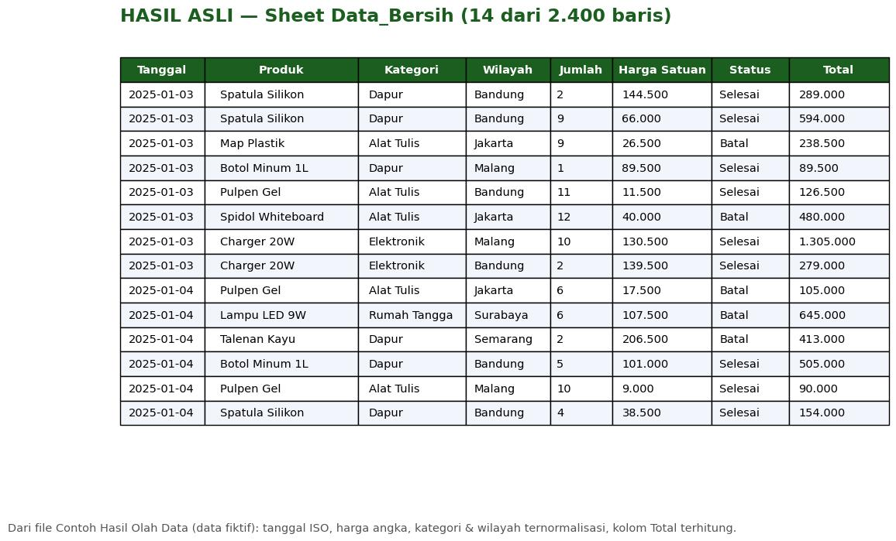
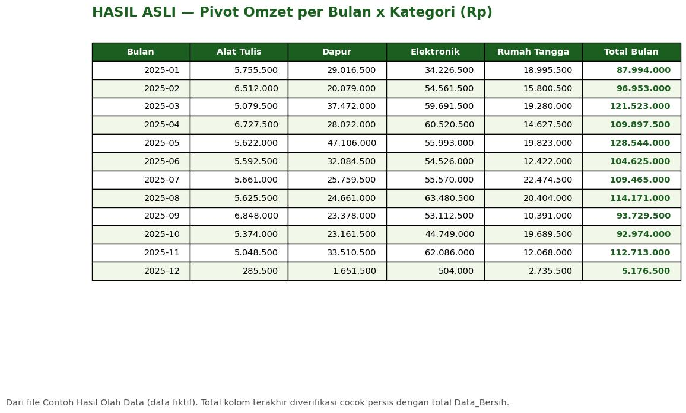
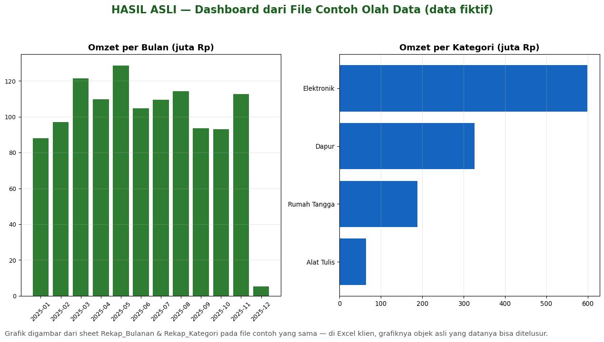
Case 4 — B2B Lead List Sample: 25 US Healthcare Businesses
A real sample researched from public sources: 25 US healthcare businesses (dentists, dermatology, chiropractic, physical therapy, veterinary, optometry and more). Every one of the 25 rows includes a public business email and phone number, and every row carries the source URL it was verified from.
How I Work — Quality Control on Every Job
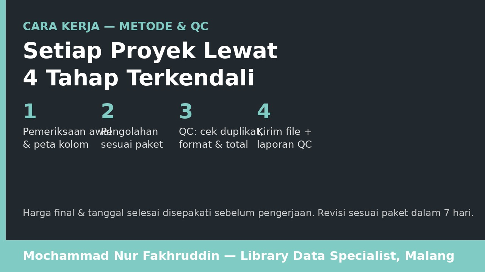
- Intake & scope check — we agree exactly which columns/fields are in scope before work starts.
- Cleaning / cataloguing — the work itself: dedupe, standardise, classify, research.
- Mandatory QC pass — format validation, a second deduplication check, and verification that no out-of-scope columns were changed.
- Delivery with a QC report — you receive the finished file plus a short report of what was changed and found.
Pricing — International Clients
| Service | Rate |
|---|---|
| Data cleaning, cataloguing, research & recap work | From $10/hour |
| Fixed-scope projects (e.g. a lead list or a catalogue batch) | Project-based quote — ask with your scope and deadline |
A small paid or sample-first start is welcome on larger jobs, so you can check quality before committing to the full dataset.
Untuk Klien Indonesia — Perpustakaan & Bisnis Lokal
Saya membantu perpustakaan sekolah/kampus dan bisnis di Indonesia merapikan data: katalogisasi & klasifikasi DDC, pembersihan dan deduplikasi data Excel, rekap & pivot, serta riset daftar kontak bisnis dari data publik. Setiap pekerjaan melewati QC dan disertai laporan perubahan.
| Layanan | Harga |
|---|---|
| Katalogisasi & klasifikasi DDC — 100 judul | Rp149.000 |
| Katalogisasi & klasifikasi DDC — 500 judul | Rp499.000 |
| Katalogisasi & klasifikasi DDC — 1.000 judul | Rp899.000 |
| Add-on impor SLiMS | + Rp99.000 |
| Data cleaning Excel (dedupe, standarisasi format) | Mulai Rp99.000 |
Pesan langsung via email atau melalui Fastwork dan Projects.co.id.
Contact
- Email: ongisnadefafa@gmail.com
- Freelancer: freelancer.com/u/nurfakhruddin
- Fastwork: fastwork.id/user/v9phnd4s
- Projects.co.id: worker profile
- LinkedIn: Mochammad Nur Fakhruddin